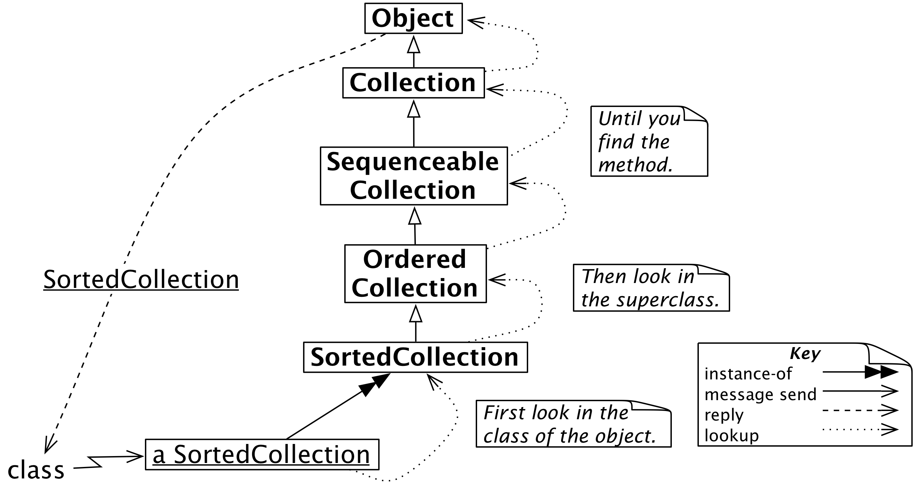
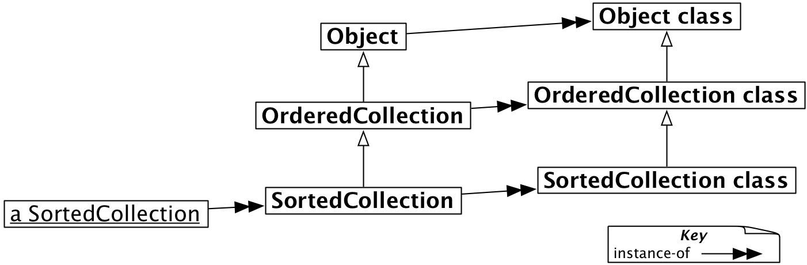
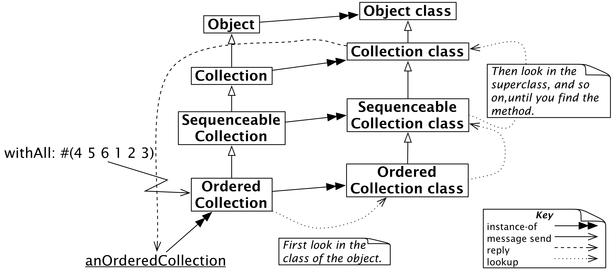
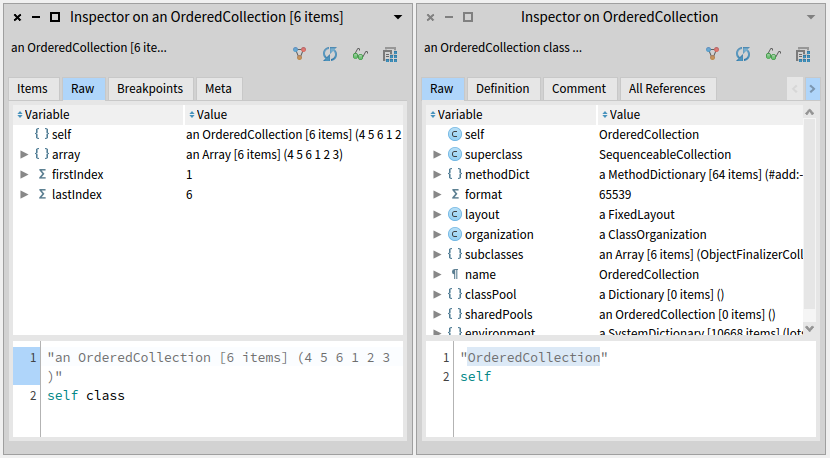
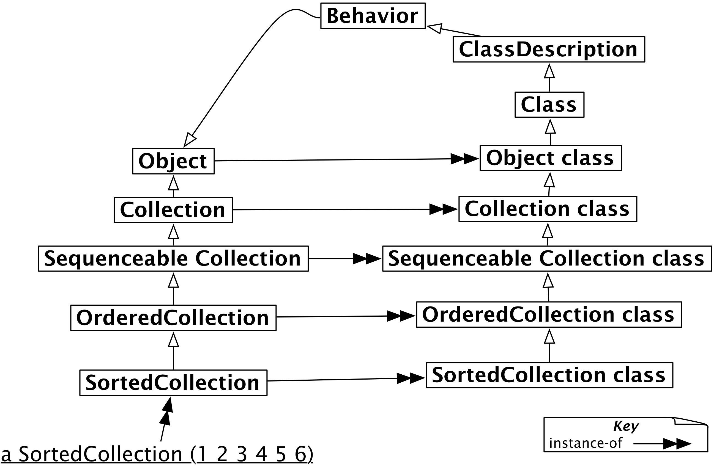
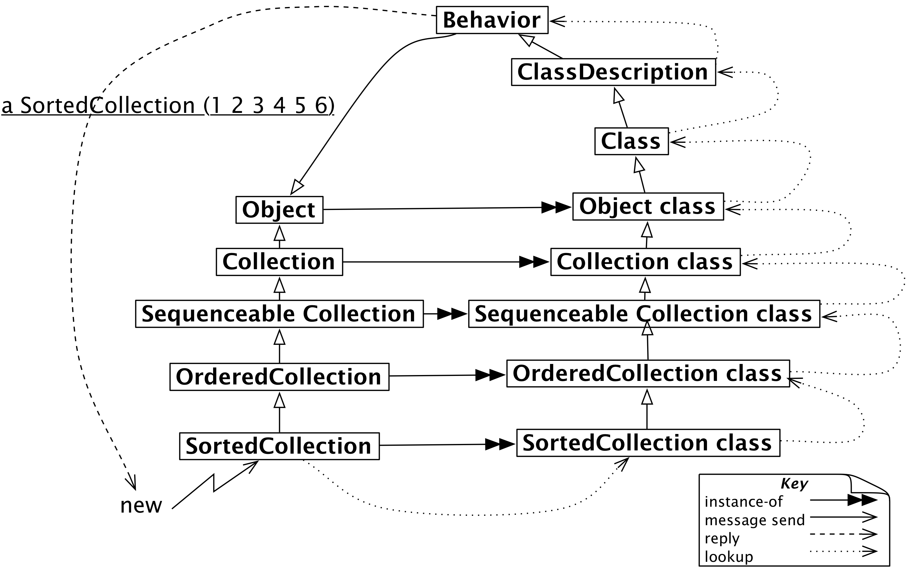
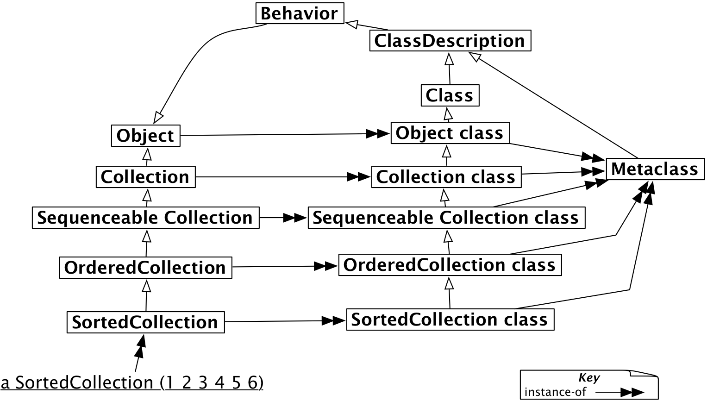
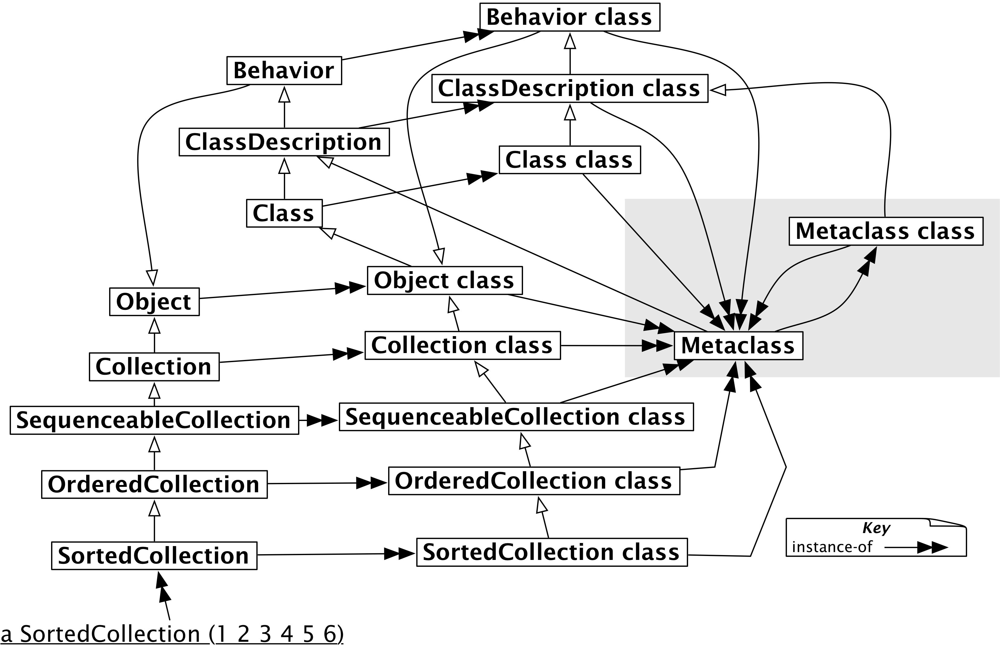

17 Classes and metaclasses
In Pharo, everything is an object, and every object is an instance of a class. Classes are no exception: classes are objects, and class objects are instances of other classes. This model is lean, simple, elegant, and uniform. It fully captures the essence of object-oriented programming. However, the implications of this uniformity may confuse newcomers.
Note that you do not need to fully understand the implications of this uniformity to program fluently in Pharo. Nevertheless, the goal of this chapter is twofold: (1) go as deep as possible and (2) show that there is nothing complex, magic or special here: just simple rules applied uniformly. By following these rules, you can always understand why the situation is the way that it is.
17.1 Rules for classes
The Pharo object model is based on a limited number of concepts applied uniformly. To refresh your memory, here are the rules of the object model that we explored in Chapter 10.
Rule 1 Everything is an object.
Rule 2 Every object is an instance of a class.
Rule 3 Every class has a superclass.
Rule 4 Everything happens by sending messages.
Rule 5 Method lookup follows the inheritance chain.
Rule 6 Classes are objects too and follow exactly the same rules.
A consequence of Rule 1 is that classes are objects too, so Rule 2 tells us that classes must also be instances of classes. The class of a class is called a metaclass.
17.2 Metaclasses
A metaclass is created automatically for you whenever you create a class. Most of the time you do not need to care or think about metaclasses. However, every time that you use the browser to browse the class side of a class, it is helpful to recall that you are actually browsing a different class. A class and
its metaclass are two separate classes. Indeed a point is different from the class Point and this is the same for a class and its metaclass.
To properly explain classes and metaclasses, we need to extend the rules from Chapter 10 with the following additional rules.
Rule 7 Every class is an instance of a metaclass.
Rule 8 The metaclass hierarchy parallels the class hierarchy.
Rule 9
Every metaclass inherits from Class and Behavior.
Rule 10
Every metaclass is an instance of Metaclass.
Rule 11
The metaclass of Metaclass is an instance of Metaclass.
Together, these 11 simple rules complete Pharo's object model.
We will first briefly revisit the 5 rules from Chapter 10 with a small example. Then we will take a closer look at the new rules, using the same example.
class to a sorted collection
17.3 Revisiting the Pharo object model
Rule 1. Since everything is an object, an ordered collection in Pharo is also an object.
OrderedCollection withAll: #(4 5 6 1 2 3)
>>> an OrderedCollection(4 5 6 1 2 3)Rule 2. Every object is an instance of a class. An ordered collection is instance of the class OrderedCollection:
(OrderedCollection withAll: #(4 5 6 1 2 3)) class
>>> OrderedCollectionRule 3. Every class has a superclass. The superclass of OrderedCollection is
SequenceableCollection and the superclass of SequenceableCollection is Collection:
OrderedCollection superclass
>>> SequenceableCollectionSequenceableCollection superclass
>>> CollectionCollection superclass
>>> ObjectRule 4. Everything happens by sending messages, so we can deduce that withAll: is a message sent to OrderedCollection and class are messages sent to the ordered collection instance, and superclass is a message sent to the class OrderedCollection and SequenceableCollection, and Collection.
The receiver in each case is an object, since everything is an object, but some of these objects are also classes.
Rule 5. Method lookup follows the inheritance chain, so when we send the message class to the result of (OrderedCollection withAll: #(4 5 6 1 2 3)) asSortedCollection, the message is handled when the corresponding method is found in the class Object, as shown in Figure 17.1.
17.4 Every class is an instance of a metaclass
As we mentioned earlier in Section 17.2, classes whose instances are themselves classes are called metaclasses. This is to make sure that we can precisely refer to the class Point and the class of the class Point.
SortedCollection and its superclasses (elided).
Metaclasses are implicit
Metaclasses are automatically created when you define a class. We say that they are implicit since as a programmer you never have to worry about them. An implicit metaclass is created for each class you create, so each metaclass has only a single instance.
Whereas ordinary classes are named, metaclasses are anonymous. However, we can always refer to them through the class that is their instance. The class of SortedCollection is SortedCollection class, and the class of Object is Object class:
SortedCollection class
>>> SortedCollection classObject class
>>> Object classIn fact metaclasses are not truly anonymous, their name is deduced from the one of their single instance.
SortedCollection class name
>>> 'SortedCollection class'Object class name
>>> 'Object class'Figure 17.2 shows how each class is an instance of its metaclass. Note that we only skip SequenceableCollection and Collection from the figure and explanation due to space constraints.
Their absence does not change the overall meaning.
17.5 Querying Metaclasses
The fact that classes are also objects makes it easy for us to query them by sending messages. Let's have a look:
OrderedCollection subclasses
>>> {SortedCollection . ObjectFinalizerCollection . WeakOrderedCollection . OCLiteralList . GLMMultiValue}SortedCollection subclasses
>>> #()SortedCollection allSuperclasses
>>> an OrderedCollection(OrderedCollection SequenceableCollection Collection Object ProtoObject)SortedCollection instVarNames
>>> #(#sortBlock)SortedCollection allInstVarNames
>>> #(#array #firstIndex #lastIndex #sortBlock)SortedCollection selectors
>>> #(#sortBlock: #add: #groupedBy: #defaultSort:to: #addAll: #at:put: #copyEmpty #, #collect: #indexForInserting: #insert:before: #reSort #addFirst: #join: #median #flatCollect: #sort: #sort:to: #= #sortBlock)
17.6 The metaclass hierarchy parallels the class hierarchy
Rule 7 says that the superclass of a metaclass cannot be an arbitrary class: it is constrained to be the metaclass of the superclass of the metaclass's unique instance: the metaclass of SortedCollection inherits from the metaclass of OrderedCollection (the superclass of SortedCollection).
SortedCollection class superclass
>>> OrderedCollection classSortedCollection superclass class
>>> OrderedCollection classThis is what we mean by the metaclass hierarchy being parallel to the class hierarchy.
Figure 17.3 shows how this works in the SortedCollection hierarchy.
SortedCollection class
>>> SortedCollection classSortedCollection class superclass
>>> OrderedCollection classSortedCollection class superclass superclass
>>> SequenceableCollection classSortedCollection class superclass superclass superclass superclass
>>> Object class
17.7 Uniformity between Classes and Objects
It is interesting to step back a moment and realize that there is no difference between sending a message to an object and to a class. In both cases the lookup for the corresponding method starts in the class of the receiver, and proceeds up the inheritance chain.
Thus, messages sent to classes follow the metaclass inheritance chain. Consider, for example, the method withAll:, which is implemented on the class side of Collection. When we send the message withAll: to the class OrderedCollection, then it is looked up the same way as any other message. The lookup starts in OrderedCollection class (since it starts in the class of the receiver and the receiver is OrderedCollection), and proceeds up the metaclass hierarchy until it is found in Collection class (see Figure 17.4). It returns a new instance of OrderedCollection.
OrderedCollection withAll: #(4 5 6 1 2 3)
>>> an OrderedCollection (4 5 6 1 2 3)Only one method lookup
There is only one uniform kind of method lookup in Pharo. Classes are just objects, and behave like any other objects. Classes have the power to create new instances only because classes happen to respond to the message new, and because the new method knows how to create new instances.
Normally, non-class objects do not understand this message, but if you have a good reason to do so, there is nothing stopping you from adding a new method to a non-metaclass.

17.8 Inspecting objects and classes
Since classes are objects, we can also inspect them.
Inspect OrderedCollection withAll: #(4 5 6 1 2 3) and OrderedCollection.
Notice that in one case you are inspecting an instance of OrderedCollection and in the other case the OrderedCollection class itself. This can be a bit confusing, because the title bar of the inspector names the class of the object being inspected.
The inspector on OrderedCollection allows you to see the superclass, instance variables, method dictionary, and so on, of the OrderedCollection class, as shown in Figure 17.5.
17.9 Every metaclass inherits from Class and Behavior
Every metaclass is a kind of a class (a class with a single instance), hence inherits from Class. Class in turn inherits from its superclasses, ClassDescription and Behavior. Since everything in Pharo is an object, these classes all inherit eventually from Object. We can see the complete picture in Figure 17.6.
Class and Behavior.
Where is new defined?
To understand the importance of the fact that metaclasses inherit from Class and Behavior, it helps to ask where new is defined and how it is found.
When the message new is sent to a class, it is looked up in its metaclass chain and ultimately in its superclasses Class, ClassDescription and Behavior as shown in Figure 17.7.
When we send new to the class SortedCollection, the message is looked up in the metaclass SortedCollection class and follows the inheritance chain. Remember it is the same lookup process than for any objects.
The question Where is new defined? is crucial. new is first defined in the class Behavior, and it can be redefined in its subclasses, including any of the metaclass of the classes we define, when this is necessary.
Now when a message new is sent to a class it is looked up, as usual, in the metaclass of this class, continuing up the superclass chain right up to the class Behavior, if it has not been redefined along the way.
Note that the result of sending SortedCollection new is an instance of SortedCollection and not of Behavior, even though the method is looked up in the class Behavior!
The method new always returns an instance of self, the class that receives the message, even if it is implemented in another class.
SortedCollection new class
>>> SortedCollection "not Behavior!"new is an ordinary message looked up in the metaclass chain.
A common mistake
A common mistake is to look for new in the superclass of the receiving class. The same holds for new:, the standard message to create an object of a given size. For example, Array new: 4 creates an array of 4 elements. You will not find this method defined in Array or any of its superclasses.
Instead you should look in Array class and its superclasses, since that is where the lookup will start (See Figure 17.7).
The method new and new: are defined in metaclasses, because they are executed in response to messages sent to classes.
In addition since a class is an object it can also be the receiver of messages whose methods are defined on Object. When we send the message class or error: to the class Point, the method lookup will go over the metaclass chain (looking in Point class, Object class....) up to Object.
17.10 Responsibilities of Behavior, ClassDescription, and Class
Behavior
Behavior provides the minimum state necessary for objects that have instances, which includes a superclass link, a method dictionary and the class format. The class format is an integer that encodes the pointer/non-pointer distinction, compact/non-compact class distinction, and basic size of instances.
Behavior inherits from Object, so it, and all of its subclasses, can behave like objects.
Behavior is also the basic interface to the compiler. It provides methods for creating a method dictionary, compiling methods, creating instances (i.e., new, basicNew, new:, and basicNew:), manipulating the class hierarchy (i.e., superclass:, addSubclass:), accessing
methods (i.e., selectors, allSelectors, compiledMethodAt:), accessing instances and variables (i.e., allInstances, instVarNames...), accessing the class hierarchy (i.e., superclass, subclasses) and querying (i.e., hasMethods, includesSelector,
canUnderstand:, inheritsFrom:, isVariable).
ClassDescription
ClassDescription is an abstract class that provides facilities needed by its two direct subclasses, Class and Metaclass. ClassDescription adds a number of facilities to the base provided by Behavior: named instance variables, the categorization of methods into protocols, the maintenance of
change sets and the logging of changes, and most of the mechanisms needed for filing out changes.
Class
Class represents the common behaviour of all classes. It provides a class name, compilation methods, method storage, and instance variables. It provides a concrete representation for class variable names and shared pool variables (addClassVarName:, addSharedPool:, initialize). Since a metaclass is
a class for its sole instance (i.e., the non-meta class), all metaclasses ultimately inherit from Class (as shown by Figure 17.9).
17.11 Every metaclass is an instance of Metaclass
The next question is since metaclasses are objects too, they should be instances of another class, but which one? Metaclasses are objects too; they are instances of the class Metaclass as shown in Figure 17.8. The instances of class Metaclass are the anonymous metaclasses, each of which
has exactly one instance, which is a class.
Metaclass.
Metaclass represents common metaclass behaviour. It provides methods for instance creation (subclassOf:), creating initialized instances of the metaclass's sole instance, initialization of class variables, metaclass instance, method compilation, and class information (inheritance links,
instance variables, ...).
17.12 The metaclass of Metaclass is an instance of Metaclass
The final question to be answered is: what is the class of Metaclass class?
The answer is simple: it is a metaclass, so it must be an instance of Metaclass, just like all the other metaclasses in the system (see Figure 17.9).
Metaclass, even the metaclass of Metaclass.
Figure 17.9 shows how all metaclasses are instances of Metaclass, including the metaclass of Metaclass itself. If you compare Figures 17.8 and 17.9 you will see how the metaclass hierarchy perfectly mirrors the class hierarchy, all the way up to Object class.
The following examples show us how we can query the class hierarchy to demonstrate that Figure 17.9 is correct. (Actually, you will see that we told a white lie — Object class superclass --> ProtoObject class, not Class. In Pharo, we must go one superclass higher
to reach Class.)
Collection superclass
>>> ObjectCollection class superclass
>>> Object classObject class superclass superclass
>>> ClassClass superclass
>>> ClassDescriptionClassDescription superclass
>>> BehaviorBehavior superclass
>>> Object"The class of a metaclass is the class Metaclass"
Collection class class
>>> Metaclass"The class of a metaclass is the class Metaclass"
Object class class
>>> Metaclass"The class of a metaclass is the class Metaclass"
Behavior class class
>>> Metaclass"The class of a metaclass is the class Metaclass"
Metaclass class class
>>> Metaclass"Metaclass is a special kind of class"
Metaclass superclass
>>> ClassDescription17.13 Chapter summary
This chapter gave an in-depth look into the uniform object model of Pharo, and a more thorough explanation of how classes are organized. If you get lost or confused, you should always remember that message passing is the key: you look for the method in the class of the receiver. This works on any receiver. If the method is not found in the class of the receiver, it is looked up in its superclasses.
- Every class is an instance of a metaclass. Metaclasses are implicit. A metaclass is created automatically when you create the class that is its sole instance. A metaclass is simply a class whose unique instance is a class.
- The metaclass hierarchy parallels the class hierarchy. Method lookup for classes parallels method lookup for ordinary objects, and follows the metaclass's superclass chain.
- Every metaclass inherits from
ClassandBehavior. Every class is aClass. Since metaclasses are classes too, they must also inherit fromClass.Behaviorprovides behavior common to all entities that have instances. - Every metaclass is an instance of
Metaclass.ClassDescriptionprovides everything that is common toClassandMetaclass. - The metaclass of
Metaclassis an instance ofMetaclass. The instance-of relation forms a closed loop, soMetaclass class classisMetaclass.